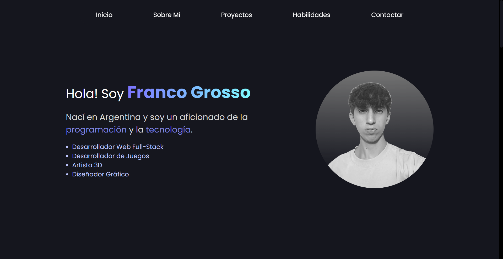
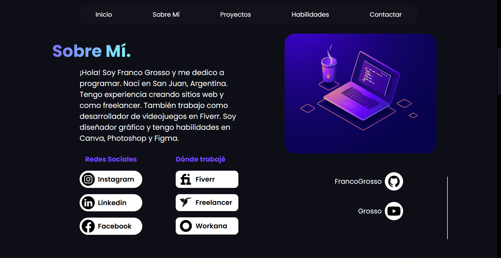
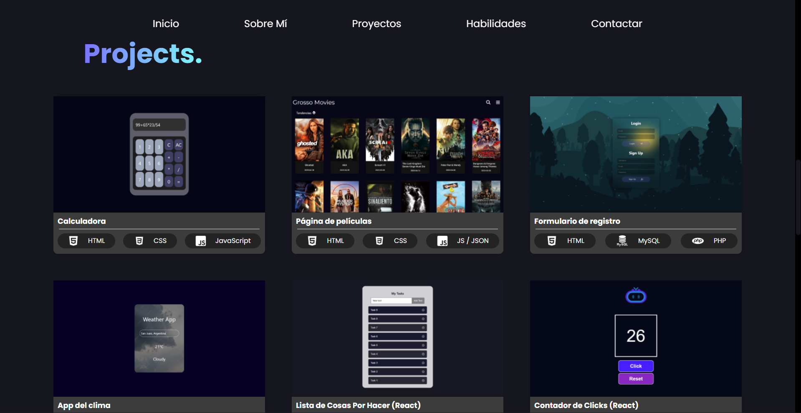
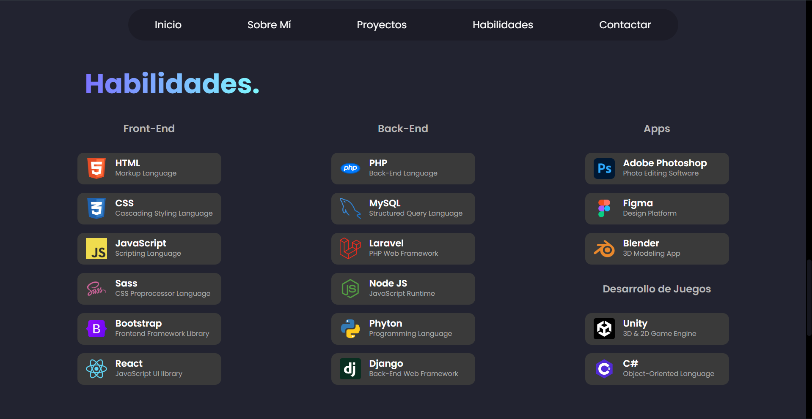
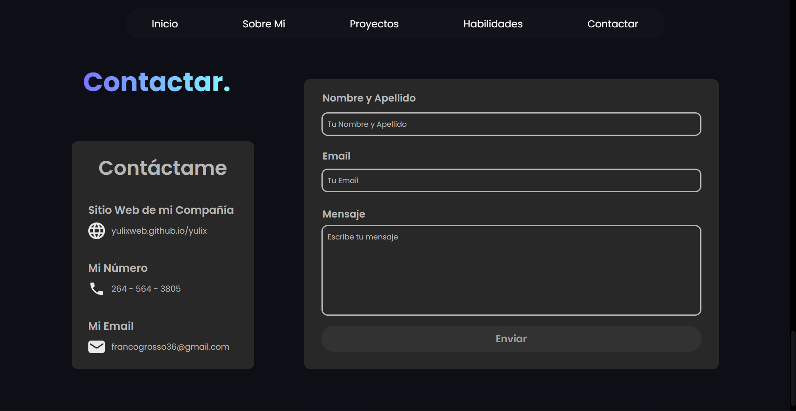

Este es un portafolio web personal que muestra nuestros proyectos y trabajos destacados. Está diseñado para ser moderno, rápido y adaptable a cualquier dispositivo, con una presentación clara de cada proyecto y una experiencia de usuario intuitiva. Incluye secciones de contacto, galería de proyectos y ejemplos de diseño web.
    